Contents
DTMF Problem Set
clear; clc;
3.1) DTMF Dial Function: dtmfdial.m
clear; clc; Fs = 8000; nums = ['0', '1', '2', '3'] zeroMe = dtmfdial(nums, Fs); soundsc(zeroMe) % Cool! t = 0:1/Fs:0.25 * length(nums) - 1/Fs; % Sampling values for sinusoids 0.20s long. plot(t, zeroMe) spectrogram(zeroMe,200,50,1000,Fs,'yaxis')
nums =
'0123'

4.1) A Scoring Function: dtmfscore.m
PART A and B) Function is in dtmfdesign.m, we used the numerical method to scale the maximum magnitude of the frequency response of the filter to be 1.
% PART C) % Function is used experimentally to determine appropriate L. See next parts for computation of optimal filter length % Here we generate the frequency filer bank Fb = [697, 770, 852, 941, 1209, 1336, 1477, 1633]; % Define Center Frequencies % PART D) % Generate the bandpass filters with L= 40 and fs = 8000. Plot the magnitude of the frequency responses all together on one plot to determine if the passbands are narrow enough to distinguish between each frequency. % Attempt: L = 40 clear; clc; % Define Center Frequencies Fb = [697, 770, 852, 941, 1209, 1336, 1477, 1633]; Fs = 8000; L = 40; hh = dtmfdesign(Fb, L, Fs); % Generate the frequency filter bank [H1, ~] = freqz(hh(:,1)); [H2, ~] = freqz(hh(:,2)); [H3, ~] = freqz(hh(:,3)); [H4, ~] = freqz(hh(:,4)); [H5, ~] = freqz(hh(:,5)); [H6, ~] = freqz(hh(:,6)); [H7, ~] = freqz(hh(:,7)); [H8, w] = freqz(hh(:,8)); f = w * Fs / (2 * pi); % Convert from angular frequency to plot in Hz figure hold on plot(f, abs(H1)); plot(f, abs(H2)); plot(f, abs(H3)); plot(f, abs(H4)); plot(f, abs(H5)); plot(f, abs(H6)); plot(f, abs(H7)); plot(f, abs(H8)); hold off xlabel('Frequency [Hz]') ylabel('Magnitude [|H|]') % They are not narrow enough to distinguish using the 0.707 threshold. Especially at lower frequencies values 697, 770, 852, 941 Hz since they are pretty close together. % PART E) % Generate the eight (scaled) bandpass filters with L= 80 and fs = 8000. Plot the magnitude of the frequency responses all together on one plot to determine if the passbands are narrow enough to distinguish between each frequency. % Attempt: L = 80 clear; clc; % Define Center Frequencies Fb = [697, 770, 852, 941, 1209, 1336, 1477, 1633]; Fs = 8000; L = 80; hh = dtmfdesign(Fb, L, Fs); % Generate the frequency filter bank [H1, ~] = freqz(hh(:,1)); [H2, ~] = freqz(hh(:,2)); [H3, ~] = freqz(hh(:,3)); [H4, ~] = freqz(hh(:,4)); [H5, ~] = freqz(hh(:,5)); [H6, ~] = freqz(hh(:,6)); [H7, ~] = freqz(hh(:,7)); [H8, w] = freqz(hh(:,8)); f = w*Fs/(2*pi); % Denormalize the angular frequency so we can plot in Hz figure hold on plot(f, abs(H1)); plot(f, abs(H2)); plot(f, abs(H3)); plot(f, abs(H4)); plot(f, abs(H5)); plot(f, abs(H6)); plot(f, abs(H7)); plot(f, abs(H8)); hold off xlabel('Frequency [Hz]') ylabel('Magnitude [|H|]') % By increasing the filter lengths, the passband is much narrower making it easier to distinguish between frequencies but still not enough for the 0.707 threshold. % PART F) % Generate the eight (scaled) bandpass filters with L= ? and fs = 8000. Plot the magnitude of the frequency responses all together on one plot to determine if the passbands are narrow enough to distinguish between each frequency. % Attempt: L = 110 clear; clc; % Define Center Frequencies Fb = [697, 770, 852, 941, 1209, 1336, 1477, 1633]; Fs = 8000; L = 110; hh = dtmfdesign(Fb, L, Fs); % Generate the frequency filter bank [H1, ~] = freqz(hh(:,1)); [H2, ~] = freqz(hh(:,2)); [H3, ~] = freqz(hh(:,3)); [H4, ~] = freqz(hh(:,4)); [H5, ~] = freqz(hh(:,5)); [H6, ~] = freqz(hh(:,6)); [H7, ~] = freqz(hh(:,7)); [H8, w] = freqz(hh(:,8)); f = w*Fs/(2*pi); % Denormalize the angular frequency so we can plot in Hz figure hold on plot(f, abs(H1)); plot(f, abs(H2)); plot(f, abs(H3)); plot(f, abs(H4)); plot(f, abs(H5)); plot(f, abs(H6)); plot(f, abs(H7)); plot(f, abs(H8)); yline(1/sqrt(2)) hold off xlabel('Frequency [Hz]') ylabel('Magnitude [|H|]') yline(1/sqrt(2)) xlim([471 1785]) ylim([0.692 1.021]) % This is a good value as it allows frequencies to be distinguished between each other. This allows the 1/sqrt(2) threshold to hold. % idx = find(abs(H) >= 1/sqrt(2)); % w(idx) *Fs/(2*pi); % We chose L = 110 as the value which allows frequencies to be distinguishable. The frequency 'driving' the problem is the 697Hz frequency because of how close it it to the next value.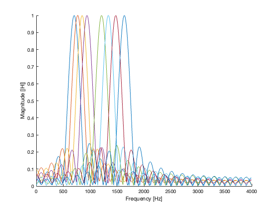 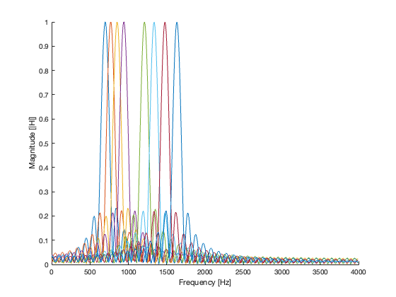 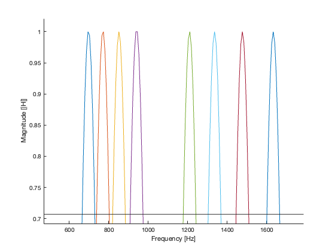
4.2) A Scoring Function: dtmfscore.m
PART A, B, and C) Function is in dtmfscore.m. Function attempts to indentify the signals that are pressent in the transmission
% PART D) % We needed to make sure that all BDF's had the same magnitude = 1 so that we can fairly compare which tones are present in the signal. Since we know the amplitude of the input sinusoids (amplitude of 1 each) and we know the gain of each filter (1), we can predict and control the output and clearly detect if a tone is present. % PART E) % Test the scoring function on a variety of tones to ensure functionality. clear; clc; % Define Center Frequencies Fb = [697, 770, 852, 941, 1209, 1336, 1477, 1633]; Fs = 8000; L = 110; hh = dtmfdesign(Fb, L, Fs); % Generate the frequency filter bank numbers = ['0', '1', '2', '3', '4', '5', '6', '7', '8', '9']; for num = 1:10 nums = [numbers(num)]; single_tone = dtmfdial(nums, Fs); % Test the filter on the signal results = zeros(1, 8); for filter = 1:8 results(filter) = dtmfscore(single_tone, hh(:,filter)); end % Print the resulting tones for each signal fprintf('For %c Found Frequencies:\n', numbers(num)) result_frequencies = (Fb .* results); disp(result_frequencies(results == 1)) end % All tones and the found freuquencies are consistent for all dialed numbers, demonstrating that the scoring function works
For 0 Found Frequencies:
941 1336
For 1 Found Frequencies:
697 1209
For 2 Found Frequencies:
697 1336
For 3 Found Frequencies:
697 1477
For 4 Found Frequencies:
770 1209
For 5 Found Frequencies:
770 1336
For 6 Found Frequencies:
770 1477
For 7 Found Frequencies:
852 1209
For 8 Found Frequencies:
852 1336
For 9 Found Frequencies:
852 1477
4.3) DTMF Decode Function: dtmfrun.m
Function is implemented in dtmfrun. Contains all the functionality to take an input signal and attempt to decode it into the series of numbers that were dialed. Perform a basic test with the function.
clear; clc; Fs = 8000; L = 110; numbers = ['0', '1', '2', '3', '4', '5', '6', '7', '8', '9']; % Generate a Test Vector test_tone = dtmfdial(numbers, Fs); % Decode the Test Vector test_result = dtmfrun(test_tone, L, Fs); % Verify that the input and output are consistent if (numbers == test_result) fprintf('SUCCESS: Test Vector Consistent!\nInput = %s\nOutput = %s\n', numbers, test_result); else fprintf('FAILED: Test Vector Inconsistent!\nInput = %s\nOutput = %s\n', numbers, test_result); end % Input and output are shown to be consistent and therefore demonstrate that the function works.
SUCCESS: Test Vector Consistent! Input = 0123456789 Output = 0123456789
4.4) Telephone Numbers
Perform verifcation of the system using a variety of tests.
clear; clc; Fs = 8000; L = 110; % Define possible inputs key_options = ['A','B','C','D','*','#','0','1','2','3','4','5','6','7','8','9']; % Set to display graphs display_graphs = 1 % Telephone Numbers test_numbers = ['8015817200'; '8015817281'; '8015814000']; for i = 1:3 current_test = test_numbers(i,:) % Generate the Test Vector test_signal = dtmfdial(current_test, Fs); % Decode the Test Vector test_result = dtmfrun(test_signal, L, Fs); if (display_graphs) t = 0:1/Fs:0.25 * length(current_test) - 1/Fs; % Sampling values for sinusoids 0.20s long. figure; plot(t, test_signal) figure; spectrogram(test_signal, 200, 50, 1000, Fs, 'yaxis'); end % Verify that the input and output are consistent if (current_test == test_result) fprintf('SUCCESS: Test Vector Consistent!\nInput = %s\nOutput = %s\n', current_test, test_result); else fprintf('FAILED: Test Vector Inconsistent!\nInput = %s\nOutput = %s\n', current_test, test_result); end end % Random Input Test num_tests = 4 test_size = 16 % Generate Test Vectors test_indicies = randi([1, 16], num_tests, test_size); test_vectors = key_options(test_indicies); for i = 1:num_tests current_test = test_vectors(i,:) % Generate the Test Vector test_signal = dtmfdial(current_test, Fs); % Decode the Test Vector test_result = dtmfrun(test_signal, L, Fs); if (display_graphs) t = 0:1/Fs:0.25 * length(current_test) - 1/Fs; % Sampling values for sinusoids 0.20s long. figure; plot(t, test_signal) figure; spectrogram(test_signal, 200, 50, 1000, Fs, 'yaxis'); end % Verify that the input and output are consistent if (current_test == test_result) fprintf('SUCCESS: Test Vector Consistent!\nInput = %s\nOutput = %s\n', current_test, test_result); else fprintf('FAILED: Test Vector Inconsistent!\nInput = %s\nOutput = %s\n', current_test, test_result); end end % Prescribed Test Number: 407*89132#BADC current_test = '407*89132#BADC'; % Generate the Test Vector test_signal = dtmfdial(current_test, Fs); % soundsc(test_signal) % Decode the Test Vector test_result = dtmfrun(test_signal, L, Fs); if (display_graphs) t = 0:1/Fs:0.25 * length(current_test) - 1/Fs; % Sampling values for sinusoids 0.20s long. figure; plot(t, test_signal) figure; spectrogram(test_signal, 200, 50, 1000, Fs, 'yaxis'); end % Verify that the input and output are consistent if (current_test == test_result) fprintf('SUCCESS: Test Vector Consistent!\nInput = %s\nOutput = %s\n', current_test, test_result); else fprintf('FAILED: Test Vector Inconsistent!\nInput = %s\nOutput = %s\n', current_test, test_result); end
display_graphs =
1
current_test =
'8015817200'
SUCCESS: Test Vector Consistent!
Input = 8015817200
Output = 8015817200
current_test =
'8015817281'
SUCCESS: Test Vector Consistent!
Input = 8015817281
Output = 8015817281
current_test =
'8015814000'
SUCCESS: Test Vector Consistent!
Input = 8015814000
Output = 8015814000
num_tests =
4
test_size =
16
current_test =
'74990444*51C5496'
SUCCESS: Test Vector Consistent!
Input = 74990444*51C5496
Output = 74990444*51C5496
current_test =
'8B918A6CA#016C#*'
SUCCESS: Test Vector Consistent!
Input = 8B918A6CA#016C#*
Output = 8B918A6CA#016C#*
current_test =
'C*C66755B961*B32'
SUCCESS: Test Vector Consistent!
Input = C*C66755B961*B32
Output = C*C66755B961*B32
current_test =
'829C980A7A6441D5'
SUCCESS: Test Vector Consistent!
Input = 829C980A7A6441D5
Output = 829C980A7A6441D5
SUCCESS: Test Vector Consistent!
Input = 407*89132#BADC
Output = 407*89132#BADC
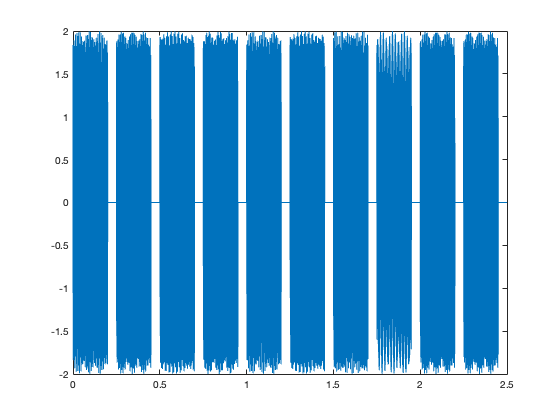 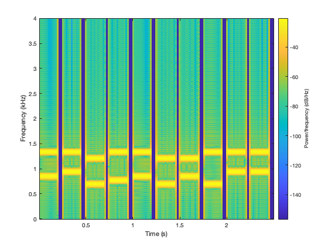 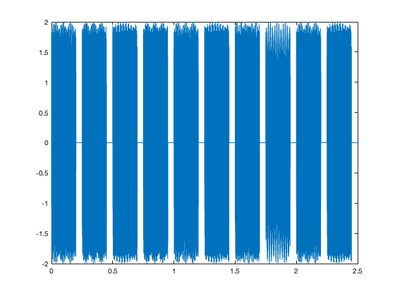 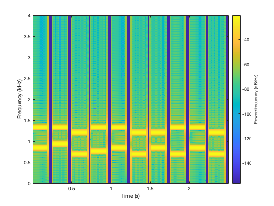 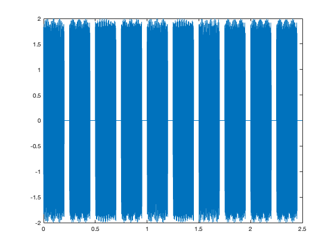 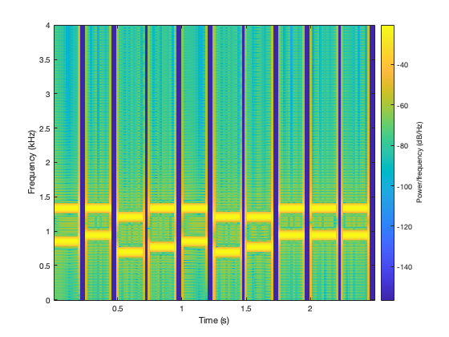 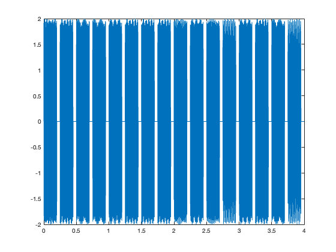 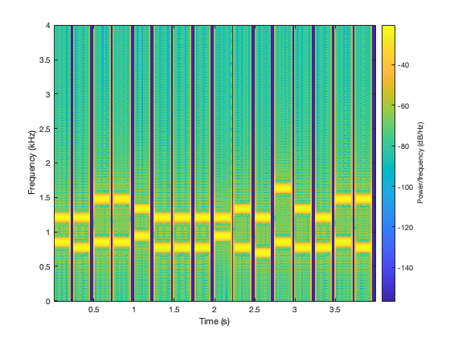 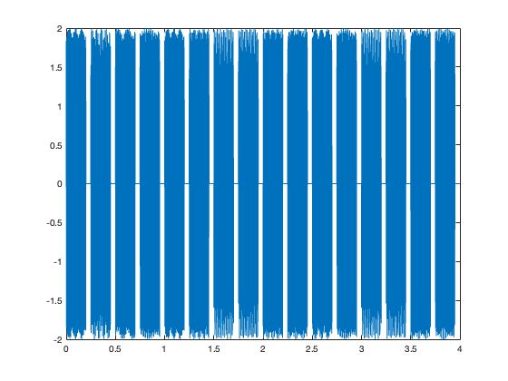 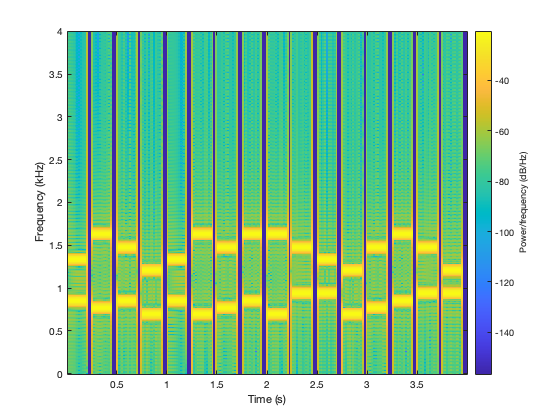 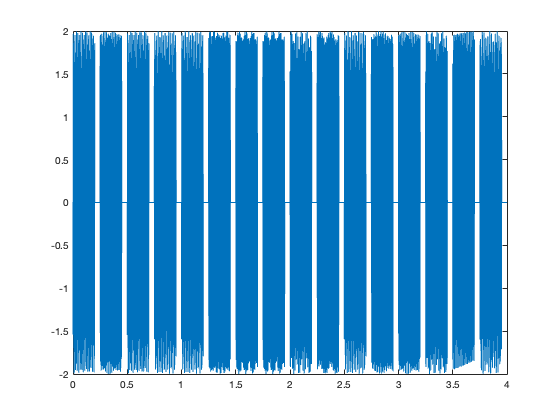 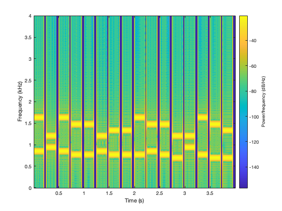 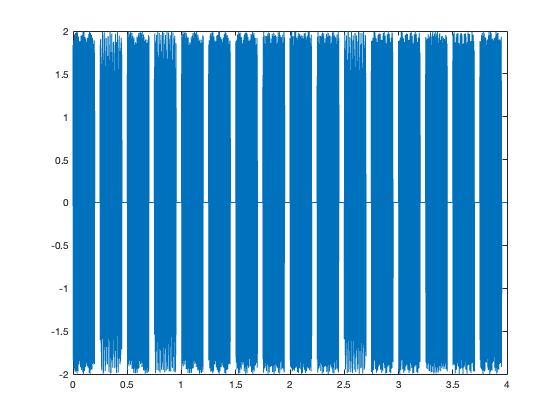 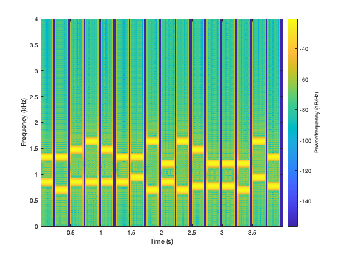 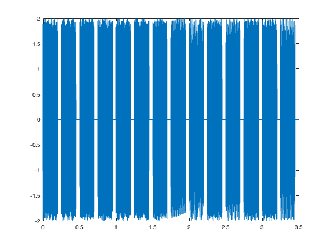 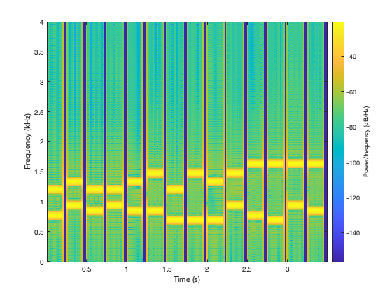 4.5) Demo
Perform verifcation of the developed functions as needed. See section 4.4 for demonstrations.